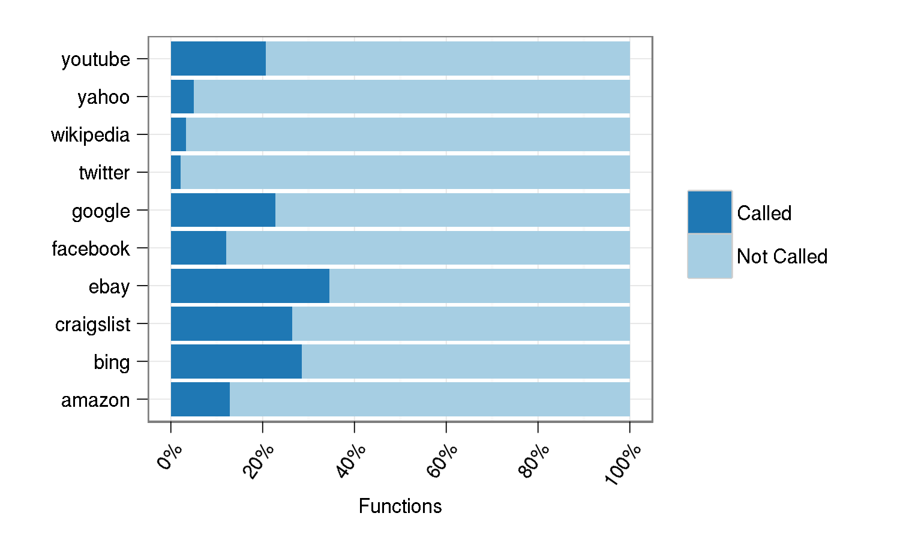
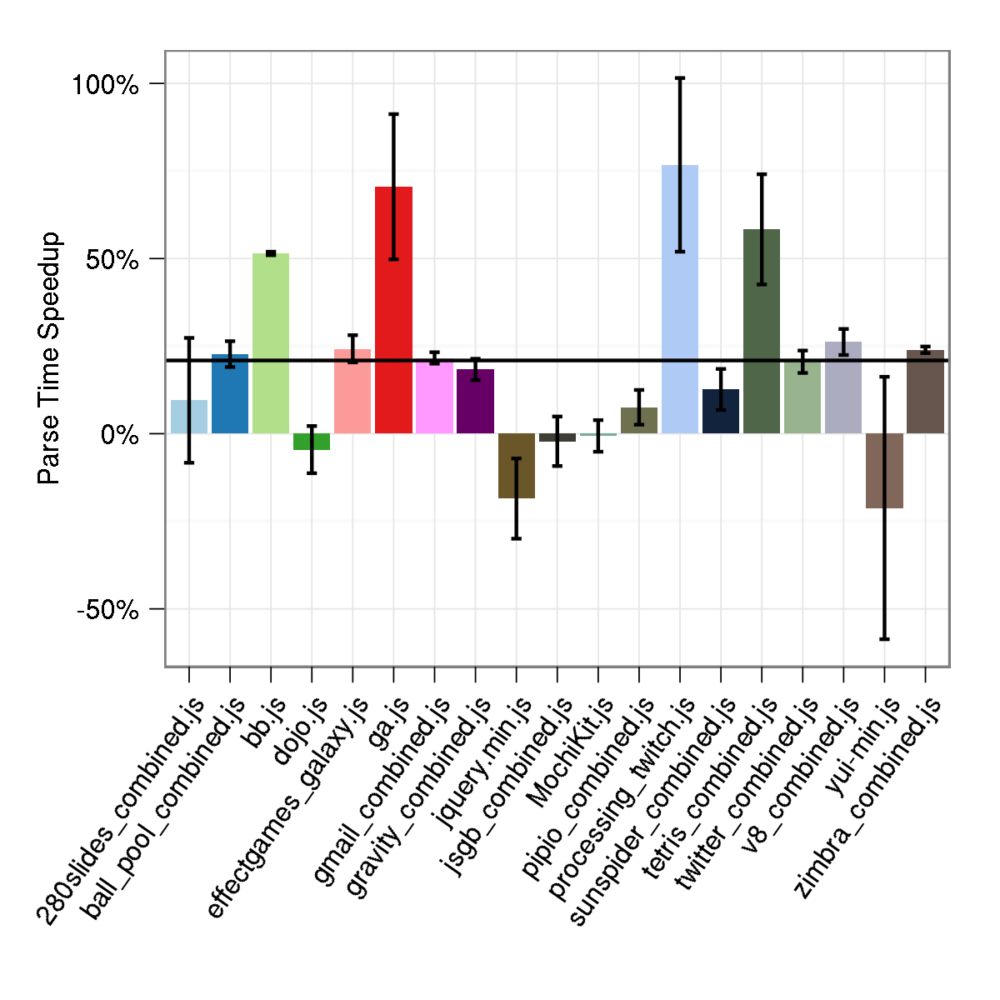
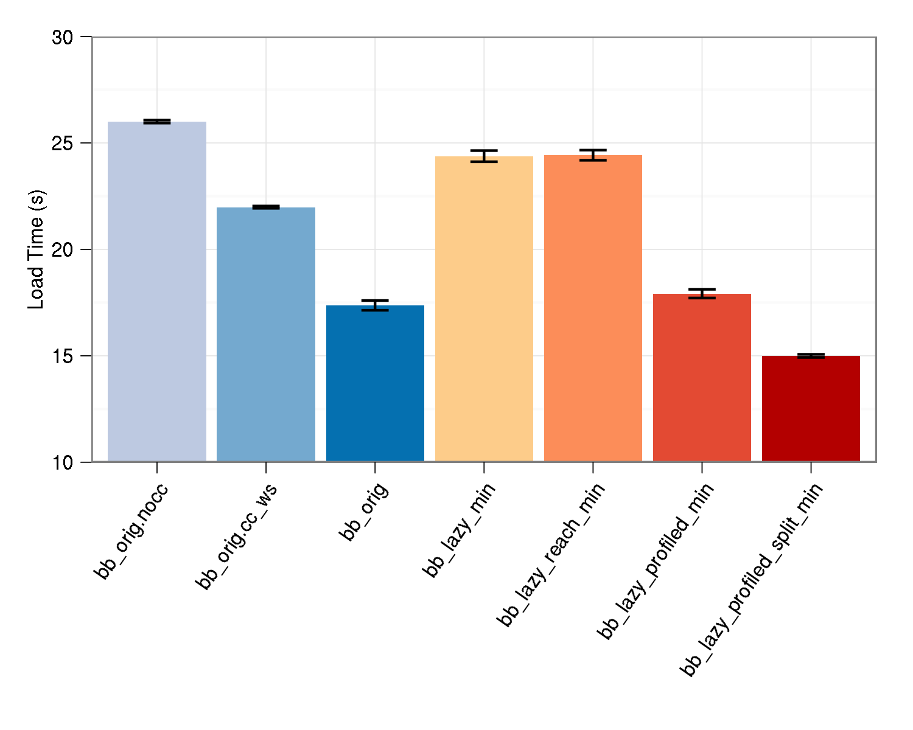
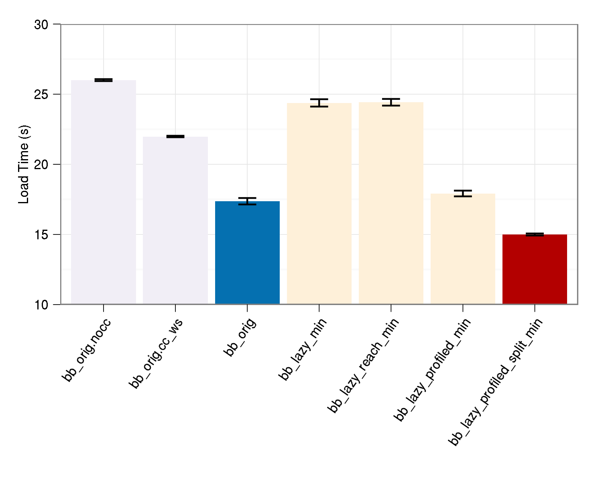

Lazy Javascript Loading
Defer ALL the functions!
Stephen Crane
Background
Downloading JS is slow!
Parsing is expensive too!
Page Loading
Functions called during loading

Deferred Parsing might help
Load function as a string instead of code
(or even in a comment)
Insert stub in place of original function
JS engine can parse a string or comment faster than code
Challenges:
Load a function from a string representation
Only perform this load once
Patch the stub function with the real code
Deferred Parsing – example
function foo() { console.log('Hello, world!'); } foo();
var fooStr = "function() {console.log('Hello, world!');}"; function foo() { foo = loadFunction(fooStr); foo(); }
Loading strings → functions
Oh noes! eval()!
function loadFunction(functionStr, stubFunction) { if (typeof functionStr === 'string') { var loadedFunction = eval(functionStr); loadedFunction.prototype = stubFunction.prototype; for (var prop in stubFunction) { loadedFunction[prop] = stubFunction[prop]; } return loadedFunction; } else { return stubFunction; } }
Patching the stub function
Trickier than it sounds
var cache = { foo: "function() {console.log('Hello, world!');}" }; function foo() { var temp = cache['foo'] = loadFunction( cache['foo'], arguments.callee ); if (foo === arguments.callee) foo = temp; return temp.apply(this, arguments); }
Deferred Loading to the Rescue
Include only what you need to load the page
Many ways to defer JS
– for example:
var script = document.createElement('script'); script.type = 'text/javascript'; script.async = true; script.src = 'script.js'; var existing = document.getElementsByTagName('script')[0]; s.parentNode.insertBefore(script, existing);
Modified version of Google Analytics loader
Requires developers to split their code manually
Automatic Splitting
Can we automate the process of splitting code into “now” and “later”?
Two approaches:
Static call graph
Call profiling
Call Profiling
Instrument code
Run instrumented code, stopping when page is loaded
Recompile using call profile, deferring all functions which were not called
Deferrify
Esprima + Escodegen + LLJS + Special Sauce™
Source-to-source compiler built on top of Esprima and Escodegen.
Fully automated defered parsing and/or loading, using call graph or profiling information.
Available at
http://github.com/rinon/deferrify
Demo!
Defer Parsing
Defer Parsing and Loading
function foo() { console.log('Hello, world!'); } foo();
Performance
Pretty Graphs!
Performance
Parse Time Speedups

Parsemark
parsing benchmark
Performance
BananaBread
Load Time

Performance
BananaBread
Load Time

Thanks!
Big thank you to Michael Bebenita, Alon Zakai, Dave Herman, and the entire research team
deferrify.com
Stephen Crane
@rinon
–
github.com/rinon
Questions?
Big thank you to Michael Bebenita, Alon Zakai, Dave Herman, and the entire research team
deferrify.com
Stephen Crane
@rinon
–
github.com/rinon
←
→
/
Go to slide:
#